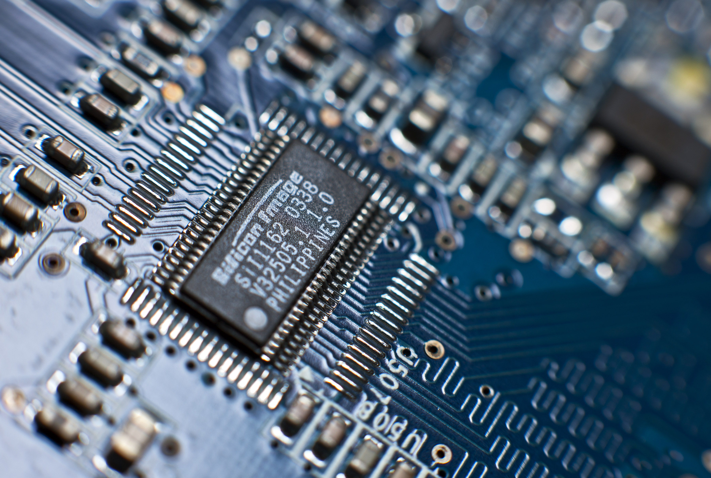
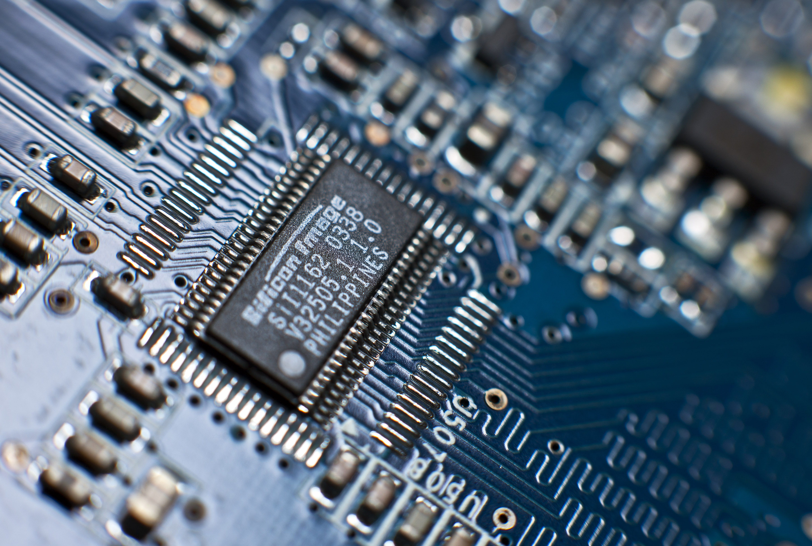

All About Me!
Personal Bio
My name is Ramakrishna Senthil, but I go by 'Ram.'
Something interesting about me, is that I love to fill my time with everything that I can fill it with. In school, I am the Workshop Leader of STEM Robotics Club, the President of Electronics Club, and also I am a member of the Debate Club, as well as the Let It Be club. I participate in the Early College Program at Ayala, where we take community college classes from Ayala, and most recently, we took a science class, Astronomy. I volunteer at the library as a teaching assistant for the LEGO Mindstorms Program. Also, I have been playing piano since I was five years old, and last year I finished the last level of ABRSM Piano (Level 8). I am currently part of the local Boy Scout Troop, Troop 220, and I am a Life Scout right now, the rank before Eagle.
I possess a huge passion for Robotics, and because of this, I love Electronics and Programming. As a result, when I go into the workforce, my dream is to be a Robotics Engineer, who graduated from Cal-Tech with a Mechanical Engineering Degree. This passion of Engineering has led me to compete in many Science & Engineering Competitions, where I have won many awards and medals at the regional level, and some at even the state level.
 
